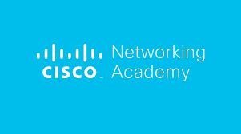
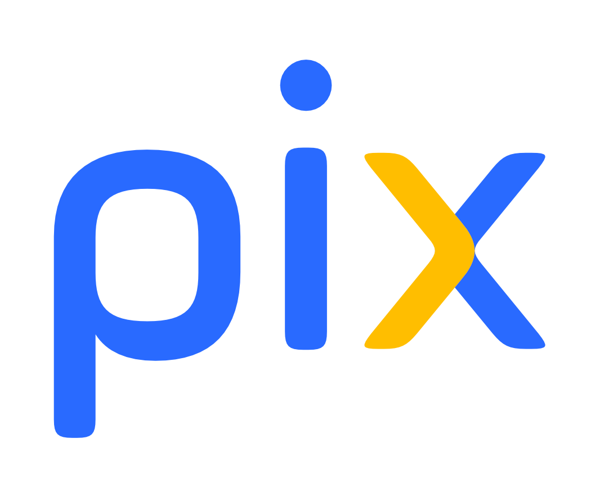
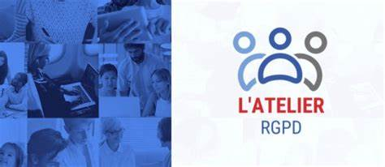

Compétences

SecNumAcademie
SecNumAcademie est un site de formation gratuit sur la cybersécurité, proposé par le site officiel du gouvernement français.

Cisco Networking Academy
Cisco NetAcademie est une plateforme de formation complète proposée par Cisco, offrant des cours en ligne sur les réseaux, la cybersécurité et l'infrastructure informatique.

PIX
Pix est le service public en ligne pour évaluer, développer, et certifier ses compétences numériques. Il est proposé par l'État français et est accessible gratuitement.

CNIL Atelier RGPD
L’atelier RGPD est une formation en ligne gratuite, illimitée et ouverte à tous (Mooc). Elle permet de se former à la gestion des données personnelles. La CNIL propose une formation en ligne sur le RGPD ouverte à tous destinée notamment aux professionnels des petites et moyennes entreprises.